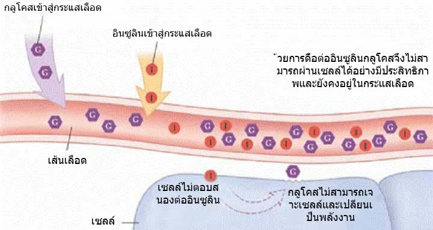

ความซับซ้อนของการรักษาโรคเบาหวานในเอเชีย - บทสัมภาษณ์ผู้เชี่ยวชาญด้านโรคเบาหวานจากเยอรมนี
ดร.เคลาส์ ฟอลเกอร์ (Klaus Volker) — ผู้เชี่ยวชาญด้านโรคเบาหวานจากเยอรมนี
ดร.ฟอลเกอร์: "การรักษาโรคเบาหวานในปัจจุบันยังมีความซับซ้อน ทำให้จำนวนผู้ป่วยโรคนี้เพิ่มขึ้นทั่วโลกในทุกปี โดยเฉพาะในเอเชียตะวันออกเฉียงใต้"
บทสัมภาษณ์พิเศษ
จากประสบการณ์กว่า 20 ปีของดร.ฟอลเกอร์ ในการรักษาโรคเบาหวาน ดร.ฟอลเกอร์สรุปว่า โรคเบาหวานยังคงเป็นหนึ่งในโรคอันตรายที่สุดและมีผู้ป่วยเพิ่มขึ้นทั่วโลกในทุกปี สวนทางกับเทคโนโลยีทางการแพทย์ที่พัฒนาขึ้นเรื่อยๆ
- ก่อนหน้านี้ คุณบอกเราว่า โรคเบาหวานเป็นโรคที่มีจำนวนผู้ป่วยเพิ่มขึ้นทุกปี?
- ใข่ครับ หากดูตามสถิติขององค์การอนามัยโลกแล้ว จำนวนผู้ป่วยโรคเบาหวานนั้นเพิ่มขึ้นจนน่าตกใจ จาก 100 ล้านคนในปี 1980 เป็น 400 ล้านคนในปี 2014 เพิ่มขึ้นถึงสี่เท่าตัว เบาหวานยังเป็นสาเหตุอันดับที่7ของการตายทั่วโลกอีกด้วย
ฟังดูแล้วน่ากลัวมากๆ ทั้งๆที่เทคโนโลยีการแพทย์สมัยใหม่ก้าวหน้าไปมาก แต่ไม่มีทางทำให้จำนวนผู้ป่วยลดลงได้เลยหรือคะ?
การรักษาหากจะทำให้หายขาดนั้น ต้องเริ่มตั้งแต่ดูแลตัวเองตั้งแต่ต้น ด้วยการกินอาหารที่มีประโยชน์ ออกกำลังกายเป็นประจำ และลด ละ หรือ เลิกพฤติกรรมที่อันตรายต่อสุขภาพ เช่น ดื่มเหล้า หรือสูบบุรี่ แต่ด้วยสภาพสังคมที่เปลี่ยนไป ผู้คนต้องทำงานมากขึ้น ไลฟ์สไตล์ต่างจากเมื่อก่อน ทำให้บางครั้ง การดูแลตัวเองทำได้ยาก
ในการป้องกันหรือบรรเทาอาการที่เกิดจากโรคเบาหวาน แต่ละประเทศก็จะมีวิธีที่แตกต่างกันไป แต่ในเอเชีย บางครั้งผู้คนยังไม่ได้รับข้อมูลเกี่ยวกับโรคเบาหวานที่เพียงพอ หรือระบบสาธารณสุขที่ยังไม่ทั่วถึง ทำให้การเข้าถึงแพทย์หรือผลิตภัณฑ์ต่างๆทำได้ยาก
ในเอเชีย บ่อยครั้งที่ผมพบว่า การรักษามักใช้สมุนไพรพื้นบ้านโดยไม่พึ่งวิทยาศาสตร์ เช่น มะระขูด หรือกระเทียม ซึ่งไม่มีหลักฐานทางวิทยาศาสตร์ใดๆว่าสามารถใช้ได้จริง หรือบางครั้งมีการวางขายผลิตภัณฑ์ที่ไม่มีคุณภาพในท้องตลาด ทำให้ผู้บริโภคสับสนและการป้องกันหรือบรรเทาอาการทำไม่ได้จริง
แล้วทำไมผลิตภัณฑ์เหล่านี้ยังคงได้รับความนิยมในกลุ่มผู้ป่วย นั่นก็เป็นเพราะว่า การรักษาตามอาการ เช่น ทำให้ระดับน้ำตาลลดลงอย่างรวดเร็ว เป็นสิ่งที่เห็นผลง่ายและชัดเจน แต่ก็หมดฤทธิ์อย่างรวดเร็วเช่นกัน แต่ผลข้างเคียงหลังจากนั้น อาจทำให้ชีวิตของผู้ป่วยแย่ลงก่อนเป็นเบาหวานเสียอีก!
ผลิตภัณฑ์เหล่านี้ยังมีวางขายในร้านขายยาทั่วไป นั่นเป็นเพราะว่ายาและเวชภัณฑ์ทางการแพทย์ เป็นหนึ่งในธุรกิจที่สร้างกำไรได้มากที่สุดในเอเชีย บ่อยครั้งจึงมีการวางขายผลิตภัณฑ์ที่ไม่มีฤทธีรักษาหรือบรรเทาได้จริง แต่ทำให้ผู้ผลิตได้กำไรมหาศาล !
- คุณพูดถึงการรักษาโรคเบาหวานในเอเชีย แล้วในยุโรปล่ะครับ?
- ในยุโรปมีวิธีการดูแลที่แตกต่างกันไปครับ อันดับแรก ชาวยุโรปส่วนใหญ่ได้รับข้อมูลที่เพียงพอเกี่ยวกับโรคเบาหวาน ทำให้เมื่อเป็นแล้ว สามารถตระหนักถึงอันตรายของโรคและไปพบแพทย์ก่อนที่จะลุกลามหรืออาการรุนแรงขึ้น
นอกจากนี้ ยังมีการคิดค้นนวัตกรรมใหม่ๆในการบรรเทาภาวะแทรกซ้อนจากโรคเบาหวาน นอกจากการได้รับอินซูลินเพิ่มแล้ว ยังมีการคิดค้นผลิตภัณฑ์ใหม่ที่ช่วยกระตุ้นการผลิตอินซูลินในตับอ่อน ทำให้ร่างกายสามารถผลิตอินซูลินและนำไปใช้ได้เอง ไม่ต้องได้รับอินซูลินเพิ่มเติมในปริมาณมาก
ผลิตภัณฑ์เหล่านี้ จะไปช่วยกระตุ้นการหลั่งอินซูลินจากตับอ่อน ซึ่งเป็นกลไกสำคัญทำให้ร่างกายนำน้ำตาลที่บริโภคเข้าไปใช้ได้อย่างเป็นปกติ ทำให้ระดับน้ำตาลไม่ค้างอยู่ในร่างกายและระดับน้ำตาลโดยรวมลดลง หากลดสาเหตุนี้ ซึ่งเป็นสาเหตุหลักของภาวะแทรกซ้อนของโรคเบาหวานได้ ทำให้ผู้ป่วยอยู่ได้ยาวนานขึ้น 10-15 ปี!
!
- ผลิตภัณฑ์นี้คือผลิตภัณฑ์อะไรครับ?
- ผลิตภัณฑ์นี้มีชื่อว่า DiaNot ซึ่งถูกค้นคว้าตั้งแต่ปี 2010 จนกว่าจะได้รับการผลิตในปัจจุบัน โดยผลิตภัณฑ์มีส่วนประกอบจากธรรมชาติที่ช่วยกระตุ้นการผลิตอินซูลินในตับอ่อน ลดการส่งน้ำตาลเข้าสู่กระแสเลือด ทำให้ระดับน้ำตาลจะลดลงเรื่อยๆอย่างมีประสิทธิภาพ
สารสกัดธรรมชาติในผลิตภัณฑ์ เช่น สารสกัดชาเขียวหรือเมล็ดกาแฟไม่คั่ว หรือสารสกัดจากเคลป์ จะช่วยลดการเกาะตัวของไขมันที่ผนังหลอดเลือด ลดการอุดตันของหลอดเลือดแดงได้ด้วย โดยผู้ใช้จะค่อยๆรู้สึกกระปรี้กระเปร่าขึ้น อาการข้างเคียงของเบาหวานต่างๆ เช่น ปัสสาวะบ่อย อ่อนเพลีย จะค่อยๆลดลงตามลำดับ
|
สารสกัดจากมะขามป้อม |
ช่วยลดระดับน้ำตาลในเลือด ชะลอการดูดซึมน้ำตาล |
|
สารสกัดจากส้มแขก |
ช่วยลดระดับไขมัน ลดการอุดตันของหลอดเลือด |
|
ขิง |
ช่วยลดระดับน้ำตาลในเลือดได้ดี โดยหากได้รับในปริมาณที่เพียงพอและเข้มข้น |
|
ไนอะซินหรือวิตามินบี 3 |
ลดระดับไขมันและโคเลสเตอรอลในเลือด |
|
ผงพริกไทย |
รักษาระดับกลูโคสในร่างกาย |
|
ผงกระบองเพชร |
ลดน้ำตาลในเลือด |
|
วิตามินดี3 |
เพิ่มภูมิคุ้มกันในร่างกาย |
|
วิตามินเอ |
เสริมสร้างภูมิคุ้มกัน |
- สามารถหาซื้อ DiaNot ได้อย่างไรครับ?
-
ปัจจุบัน สามารถสั่งซื้อได้ทางออนไลน์จากเว็บไซต์อย่างเป็นทางการของตัวแทนจำหน่ายครับ เนื่องจากผลิตภัณฑ์นี้ยังไม่วางจำหน่ายในร้านขายยา แต่เราหวังว่าผลิตภัณฑ์จะได้รับการวางจำหน่ายในอนาคต!
- สุดท้ายนี้ คุณอยากบอกอะไรกับผู้ป่วยเบาหวานครับ?
- ในฐานะผู้เชี่ยวชาญ ผมอยากย้ำว่า ปัจจุบัน เบาหวานไม่ได้เป็นโรคของผู้สูงอายุอีกต่อไปแล้ว แต่สถิตินั้นบ่งชี้ว่า ผู้ป่วยโรคเบาหวานมีอายุที่น้อยลงเรื่อยๆ ผลิตภัณฑ์คุณภาพอย่าง DiaNot จะสามารถช่วยคุณได้ โดยคุณสามารถอ่านรายละเอียดผลิตภัณฑ์ได้ที่นี่
วิธีสั่งซื้อผลิตภัณฑ์
ขั้นตอนการสั่งซื้อ:
- กรอกแบบฟอร์มสั่งซื้อบนเว็บไซต์ตัวแทนจำหน่าย
- รอรับโทรศัพท์จากปรึกษาผลิตภัณฑ์ รับคำแนะนำเกี่ยวกับโรคเบาหวานและผลิตภัณฑ์ฟรี โดยไม่มีค่าใช้จ่าย
- รอรับผลิตภัณฑ์ภายใน 2-7 วัน ชำระเงินเมื่อได้รับผลิตภัณฑ์แล้วเท่านั้น
ผลการสำรวจ ผู้ใข้ DiaNot จำนวน 2000 คน
ผลลัพธ์หลังใช้ผลิตภัณฑ์เป็นเวลา 1 เดือน:
- ระดับน้ำตาลในเลือดลดลง – 99% ของผู้ใช้
- อาการข้างเคียงของโรคเบาหวาน เช่น กระหายน้ำ ปัสสาวะบ่อย ง – 96% ของผู้ใช้
- ร่างกายมีพละกำลัง กระปรี้กระเปร่าขึ้น – 92% ของผู้ใช้
- น้ำหนักเพิ่มขึ้น – 98% ของผู้ใช้
- มีภูมิคุ้มกันมากขึ้น ป่วยน้อยลง – 97% ของผู้ใช้
ผลิตภัณฑ์เป็นสารสกัดจากธรรมชาติ ดังนั้น ผลลัพธ์จะค่อยๆปรากฏขึ้นตามระยะเวลราของการใช้ผลิตภัณฑ์ โดยห้าวันแรกระดับน้ำตาลจะค่อยๆต่ำลง อาการปวดปัสสาวะบ่อย หรือกระหายน้ำจะค่อยๆลดลงมาจนสังเกตได้ หลังจากนั้น ในช่วงสิบวันของการใช้ผลิตภัณฑ์ ระดับน้ำตาลในเลือดจะคงที่มากขึ้น ผู้ป่วยจะเริ่มกระปรี้กระเปร่าขึ้น จนถึงสามสิบวัน ที่อาการแทรกซ้อนต่างๆจะค่อยๆลดลงอย่างชัดเจน
ขณะนี้ ผลิตภัณฑ์มีโปรโมชั่นราคาพิเศษ โดยสามารถกรอกแบบฟอร์มเพื่อรับคำปรึกษาฟรีได้บนเว็บไซต์
อ่านข่าวนี้เพิ่มเติม
-
นาตาลีขอบคุณสำหรับบทความค่ะ น่าสนใจมากๆ ฉันกรอกแบบฟอร์มสั่ง DiaNot ไปก่อนหน้านี้ ที่ปรึกษาบอกว่า เหลือผลิตภัณฑ์อีกไม่มาก ฉันเลยรีบสั่งไปก่อน !
-
สมศักดิ์ผมสั่งซื้อทัน หลังสั่งไป ระดับน้ำตาลก็ลดลงทันที กระหายน้ำลดลง ปากแห้งน้อยลงด้วย ปัสสาวะก็น้อยครั้งลงครับ ระดับน้ำตาลที่ผมวัดไม่เพิ่มขึ้นเลย ตอนนี้เลิกใช้ผลิตภัณฑ์มาสองเดือนแล้ว ยังคงรู้สึกกระปรี้กระเปร่าเหมือนเดิม แนะนำทุกคนเลยครับ
-
วารุตคาขอบคุณค่ะ จะเข้าไปดูในเว็บไซต์นะคะ
-
สุมาลีฉันสั่งซื้อไปแล้ว พนักงานบอกว่าอีก 5 วันจะได้ของ ฉันหวังว่ามันจะช่วยได้จริงๆนะ
-
เลิศยศเมื่อวานเพิ่งได้รับของ ใช้แล้วเป็นไงผมจะรีบมาบอกนะครับ
-
ไอริณสวัสดีค่ะ ก่อนหน้านี้ฉันป่วยเป็นโรคเบาหวานมาหลายปี เลยสั่ง DiaNot มาใช้ได้สองเดือน ผลลัพธ์น่าพอใจมากๆ ระดับน้ำตาลลดลงและคงที่ขึ้นค่ะ
-
ขวัญข้าวเราเบื่อมากๆเวลาเดินเข้าร้านขายยาเพราะหลายที่ขายแต่ผลิตภัณฑ์ไม่มีคุณภาพ เพื่อนที่ทำงานร้านขายยาก็บอกว่า ธุรกิจกำไรเยอะจริงๆเพราะถ้าผลิตภัณฑ์ดีแค่ชั่วคราว คนก็กลับมาซื้ออีกเรื่อยๆ พออ่านบทความนี้แล้วคืออยากย้ายไปยุโรปเลย
-
คเชนทร์โรคเบาหวานเป็นอะไรที่น่ากลัวมากๆ ผมป่วยเป็นโรคนี้มา 4 เดือน โดยที่แทบจะไม่รู้ตัวเลย แรกๆก็มีอาการปากแห้ง ฉี่บ่อย หลังจากนั้นน้ำหนักก็ค่อยๆลดลง เลยไปหาหมอครับ ผมใช้ยาหมอมาหลายปี บางครั้งก็ดีขึ้น บางครั้งก็ไม่ แต่ตอนนี้ จะลองใช้ DiaNot ควบคู่กันไปด้วย หวังว่าจะช่วยได้ ขอบคุณมากครับ!
-
พอล ดรุณเราใช้ DiaNot มาสัปดาห์ที่สอง ระดับน้ำตาลก็ลดลงตริงๆ ไม่รู้สึกทรมานเหมือนเมื่อก่อนแล้ว
-
ตะวันฉันใช้ DiaNot เมื่อ 4 เดือนที่แล้ว พอไปหาหมออีกที ผลตรวจดีขึ้นมาก !
-
ผกาใช้ DiaNot เมื่อ 2 ปีที่แล้ว สั่งจากเว็บไซต์นี้ค่ะจนถึงตอนนี้ เราคิดไม่ผิดเลยที่สั่ง DiaNot มาใช้ เพราะมันคุ้มค่าคุ้มราคาจริงๆ!
-
ณิชาฉันสั่ง DiaNot ไป เขาบอกว่าจะมาส่งเร็วๆนี้ แล้วจะรีวิวให้ฟังนะคะ
-
เฮเลนขอบคุณค่ะ
-
 มารีเพื่อนของฉันเล่าให้ฟังเกี่ยวกับผลิตภัณฑ์นี้ค่ะ เค้าอยู่ที่เดนมาร์ก เห็นว่าผลิตภัณฑ์นี้ป็อปปูลาร์มาก น่าเสียดายที่ไม่มีขายในร้ายขายยาในไทย
มารีเพื่อนของฉันเล่าให้ฟังเกี่ยวกับผลิตภัณฑ์นี้ค่ะ เค้าอยู่ที่เดนมาร์ก เห็นว่าผลิตภัณฑ์นี้ป็อปปูลาร์มาก น่าเสียดายที่ไม่มีขายในร้ายขายยาในไทย -
นิกกี้ชอบ DiaNot มากๆเลยครับ ใช้ไปอาทิตย์เดียว รู้สึกดีขึ้นมาก
-
ภัทรดาสั่งไปแล้ว เดี๋ยวจะมารีวิวให้ฟังกันคะ